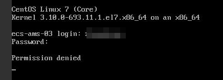
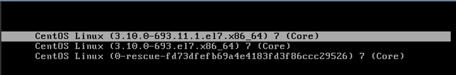
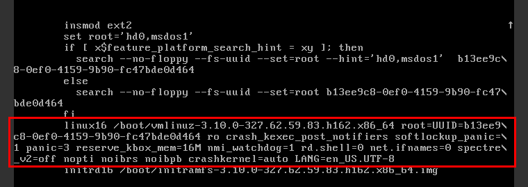
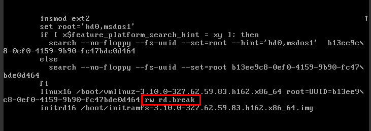

Symptom
When I attempted to remotely log in to a Linux ECS, the system displayed error Message "Permission denied".


- To resolve this issue, you are required to restart the ECS and enter the rescue mode.
- Restarting the ECS may interrupt services. Exercise caution when performing this operation.
Root Cause
The nofile parameter in /etc/security/limits.conf is used to set the maximum number of files that can be opened in the system. If the value is greater than the fs.nr_open value (1048576 by default) set in PermissionDenied.png, a login verification error will occur, leading to "Permission denied".
Solution
- Enter the single-user mode.The following uses CentOS 7 as an example:
- Restart the ECS and click Remote Login.
- Click Ctrl+Alt+Del in the upper part of the remote login panel to restart the ECS.
- Press the up arrow key to prevent automatic system startup. When the kernels are displayed, press e to enter the editing mode.Figure 2 Entering the kernel editing mode
 The grub file is encrypted by Euler images by default. Before entering the edit mode, you need to contact customer service to obtain username and password.
- Locate the row containing linux16 and delete the parameters you do not require.
- Change ro to rw for mounting the root partition with read-write permissions.
- Add rd.break and press Ctrl+X.Figure 3 Before the modification
Figure 4 After the modification
 - Run the following command to go to the /sysroot directory:
# chroot /sysroot
- Run the following command to view the fs.nr_open value:
sysctl fs.nr_open
- Change the nofile value in /etc/security/limits.conf so that the value is smaller than the fs.nr_open value obtained in 2.vi /etc/security/limits.conf
limits.conf is the pam_limits.so configuration file of Linux Pluggable Authentication Module (PAM). For more details, run the following command:
man limits.conf
- Restart the ECS and try to log in to it again.